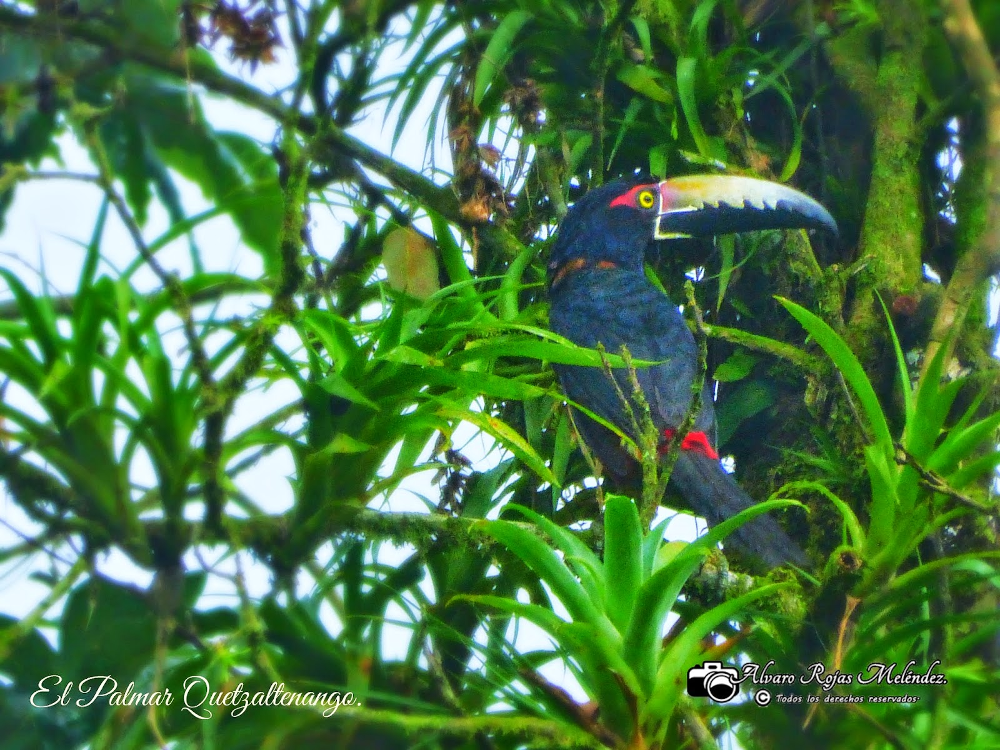

Vegetación La vegetación dentro del PRMQ, representa a 3 zonas de vida, teniendo gran variedad de especies y asociaciones vegetales dentro del área, existiendo desde bosques de especies latifoliadas hasta bosques puros de especies coníferas. Las zonas de vida representadas en el área son: Bosque Muy húmedo Montano bajo subtropical (bmh-MBS) Bosque húmedo Montano bajo subtropical (bh-MBS) Bosque húmedo Montano Subtropical (bh-MBS) El número de especies es de aproximadamente 219 especies, de las cuales 52 especies son árboles, 46 tienen hábito arbustivo, 50 son hiervas, 21 son lianas, 49 son epifitas y 1 especie es parásita. h. Fauna Según el Plan Maestro del PRMQ, en el área protegida se ha determinado la existencia de al menos 203 especies, distribuidas de la siguiente manera: 160 especies de aves, 28 especies de mamíferos, 15 especies de anfibios y reptiles. Se ha registrado casos endémicos, entre las que se puede mencionar especies siguientes: mamíferos, Musarañas (Sorex sauserrei y Sorex veraepacis), y la ardilla vientreamarillo (Sciurus aureogaster). Aves: Quetzal (Pharomacrus mocinno), tucaneta verde (Ulacorhynchus prasianus), pajuil (Crax rubra), chipe cabeza rosada (Ergaticus versicolor), el guardabarrancos (Myadestes occidentalis). El área también ofrece hábitats para especies amenazadas de extinción tales como el águila solitaria (Harpyhaliaetus solitarius). También existe diversidad de reptiles, entre los que sobresalen la mazacuata de montaña (Pituophis lineaticollis); víboras (Cerrophidion godmaní); la lagartija (Arborícola Abromía mutudai), la lagartija (Sceloporus acanthinus) y el sapo (Bufo bocourti).
